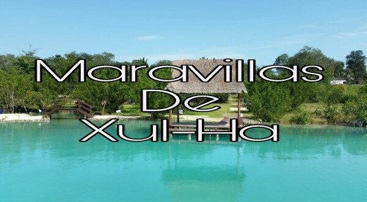

Te damos la bienvenida en esta página y a la localidad de xul-ha, donde podrás visitar
tanto balnearios, restaurantes, parques y hoteles. Es un lugar tranquilo de la localidad
de Quintana Roo hay muchos tipos de balnearios, hoteles son habitaciones cómodas y espaciosas.
De igual manera te ofrecemos esta pagina sobre la historia que hay en xul-ha, hay muchas culturas
y una de ellas son los murales que son muy conocidos en la localidad. Esta página te ofrece
información y motiva para que puedas visitar estos lugares y puedes disfrutar el lugar y conocer
cada uno de estos espacios que maravilla de xul-ha te ofrece.